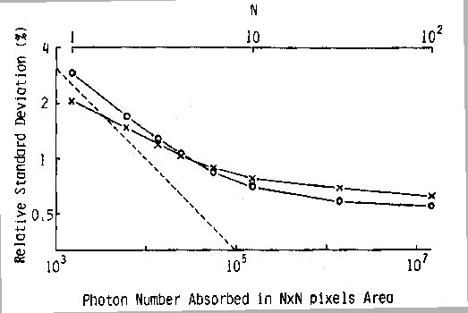
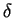
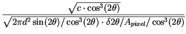
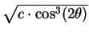

The RA-PDF data collection is much quicker (three to four orders of
magnitude faster) and requires a simpler experimental setup. However,
the data analysis becomes more difficult, in addition to the extra
steps to integrate the image plate data. The characteristics of the
image plate detector requires some additional corrections, as well as
the high background levels. We will focus on two aspects, the lack of
energy resolution and the energy dependent response.
- Estimation of standard deviations
- Proper estimation of the
standard deviations (ESD) and their propagation along the data
corrections are rather important, as the experimental PDFs are
commonly used in least square regression programs for structure
refinement [197,198]. For X-ray photon counting
detectors, the ESD of the observed count (after dead time
correction) is simply its square root when the count is large (more
than a few hundreds). However, the IP detector is not a photon
counter. Quite a few experimental factors contribute to the
relative uncertainties of IP response, such as the read-out system,
and the non-uniformity of the IP,
etc. [49,52]. To complicate the situation,
in the published literatures, the ESD is calculated with respect to
the noise level of the IP system under
study [54,55]. Fig. A.2 shows
the ESD of the IP response as a function of exposure level. It was
found that the relative ESD of the IP response is rather close to
an ideal photon counter at low exposure levels, while it saturates
to a little less than 1% at high exposure levels. The IP response
relative to the noise is found to be close to 1-2 per incident
photon at the high energies of our interest. Therefore, based on
the specifications of the IP system in our experiment (Mar345,
sensitivity of 1 X-ray photon per ADC-unit at 8 keV, intrinsic
noise 1-2 photon equivalents), we approximate the ESD of each pixel
count to be the larger value between its square root and its one
hundredth.
Figure A.2:
Estimated
relative standard deviations of the IP response among areas of
N×N pixels as a function of photon number absorbed in the
area. The scale of N is shown in the upper part. Open circles are
for the drum scanner and crosses for BAS2000. Dashed lines
represent the relative standard deviation of the photon number
absorbed in the area. Taken from [55].
|

|
Once the ESD of each pixel is determined, we can propagate the ESD
through the integration from the two dimensional raw image and
geometric corrections. However, program FIT2D does not
generate/propagate ESDs, and only gives the two column data:
intensity versus the scattering angle 2 . Thus we need to
correctly retrace the procedure done in FIT2D to obtain proper
ESDs. The steps are the following. The integrated data from FIT2D
are the averaged intensities among the pixels within each bin grid
corrected by the geometric factor. As each pixel has the same area,
the geometric factor is simply
cos3(2). So the first step
is to multiply the intensities by
cos3(2) to get the
averaged total counts. Then, we need to compute the number of
pixels in each bin grid. For the scattering angle bin width of
. Thus we need to
correctly retrace the procedure done in FIT2D to obtain proper
ESDs. The steps are the following. The integrated data from FIT2D
are the averaged intensities among the pixels within each bin grid
corrected by the geometric factor. As each pixel has the same area,
the geometric factor is simply
cos3(2). So the first step
is to multiply the intensities by
cos3(2) to get the
averaged total counts. Then, we need to compute the number of
pixels in each bin grid. For the scattering angle bin width of

2, the area for this bin on the IP is approximately
2 d2sin(2)/cos3(2) . 2, where
d is the sample to detector distance. Dividing the area by each
pixel size gives the number of pixels. Given the integrated count
c, pixel area Apixel, we obtain
d2sin(2)/cos3(2) . 2, where
d is the sample to detector distance. Dividing the area by each
pixel size gives the number of pixels. Given the integrated count
c, pixel area Apixel, we obtain
|
ESD =  ,
|
(A.2) |
noting that

should be replaced by
0.01 . c . cos3(2) if the latter is larger due to
the 1% saturation of relative uncertainties of the IP.
- Oblique incident angle
- This correction accounts for the
angular dependence of the scattered photon effective path length in
the IP phosphor layer [60], as a direct result of its
incomplete absorption of the scattered photons. This correction
becomes very significant at high X-ray energies and large incident
angles (both present in the RA-PDF experiments). Two parameters are
used here. The scattered photon absorption coefficient of the IP
phosphor layer and the incident angle (equal to 2). The X-ray
energy used in our experiments is highly penetrating with the
absorption coefficient less than 1%.
- Compton intensities at high
Q and fluorescence
- The image plate counts only give the detected X-ray intensities,
with no knowledge of the energy of the X-ray. The lack of energy
resolution makes it impossible to distinguish between elastic,
Compton, and fluorescent photons. This poses rather serious
problems to PDF analysis. Early use of image plates to collect
diffraction data reached Qmax less than 13.0
Å-1 [199,57,58]. In the low Q
region, elastic scattering is usually the strongest signal, thus
removal of the parasitic Compton and fluorescence intensities
doesn't introduce much error into the analysis. However, elastic
scattering decays exponentially with Q; Compton intensity
increases with Q; and fluorescent intensity is constant. As a
consequence, in the high Q region (Qmax
 30.0 Å-1), the
situation is quite different. For example, even the case of Ni
(Z=28) atoms, the Compton scattering is about 4 times as large as
the elastic scattering at Q = 30 Å-1. This ratio increases with
decreasing Z values. The fluorescent intensities can be effectively
suppressed by going to higher incident X-ray energies for low Z
elements or just below the edge for high Z elements. However, for
the medium to high Z elements, the currently routinely achievable
highest energy X-rays still give rather significant fluorescent
intensities. Therefore, the extraction of elastic signal in the
high Q region is not a trivial task. Small errors on the
estimation of Compton or fluorescent intensities would result in
significant deviations to the elastic signal. Another complication
is the statistical uncertainty of the extracted elastic
intensities, as the uncertainty of both Compton and fluorescent
intensities will be added to it. To achieve the same counting
statistics as when measuring elastic scattering separately, the
total counts from the image plate would have to be
30.0 Å-1), the
situation is quite different. For example, even the case of Ni
(Z=28) atoms, the Compton scattering is about 4 times as large as
the elastic scattering at Q = 30 Å-1. This ratio increases with
decreasing Z values. The fluorescent intensities can be effectively
suppressed by going to higher incident X-ray energies for low Z
elements or just below the edge for high Z elements. However, for
the medium to high Z elements, the currently routinely achievable
highest energy X-rays still give rather significant fluorescent
intensities. Therefore, the extraction of elastic signal in the
high Q region is not a trivial task. Small errors on the
estimation of Compton or fluorescent intensities would result in
significant deviations to the elastic signal. Another complication
is the statistical uncertainty of the extracted elastic
intensities, as the uncertainty of both Compton and fluorescent
intensities will be added to it. To achieve the same counting
statistics as when measuring elastic scattering separately, the
total counts from the image plate would have to be  n2 times
as many (if elastic scattering accounts for 1/n of the total
intensities).
n2 times
as many (if elastic scattering accounts for 1/n of the total
intensities).
- Energy dependence of the IP response
- Due to the detection
mechanism of the image plate, X-rays with the same number of
photons but different energies will result in different
counts. Though elastic scattering has the same energy at all Q
values, the energy of Compton scattering decreases with increasing
Q and the fluorescence intensities usually comprise of several
characteristic energy lines. The high Q region data again are
sensitive to this effect due to the dominating Compton and/or
fluorescent intensities. This energy dependent detection efficiency
is not a simple linear function, and in fact is difficult to
measure accurately. In program PDFgetX2, either a linear or
quadratic empirical formula is used as the energy dependence of the
image plate detection efficiency while ensuring the detection
efficiency decreases with increasing X-ray energy.
The resulted PDF, G(r), is in a compatible file format for the PDF
refinement program PDFFIT [11]. Please refer to the
user's guide of the program PDFgetX2 [195] for details.
Xiangyun Qiu
2005-02-18